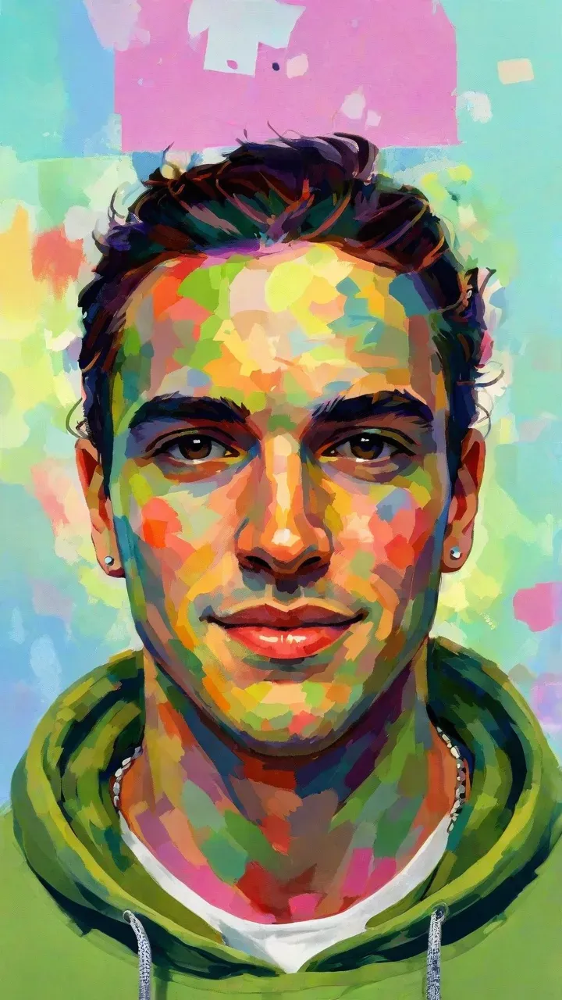

Web | iOS and visionOS | ML and RL
About Me
I’m Dawson Metzger-Fleetwood, a software engineer with dual degrees in Finance and Computer Science (Machine Learning specialization) from the University of Maryland.
I've been a professional developer since 2019. Most of my work revolves around web, iOS, and visionOS development, but my professional experience also includes building ML pipelines, automating business processes, and developing LLM toolchains, MCP servers, CLI tools, and skill packs for agents. I also co-founded Visual Language Associates, a startup in the cued language and interpretation space. I love building cool things both at work and in my free time, and I’m passionate about solving real world problems with technology.
When I’m not coding, I’m dedicated to fitness and continuously pushing myself as a natural bodybuilder. I also love learning - whether it be a random skill, a new language, or an RL algorithm optimization. Traveling is another big part of my life. I enjoy exploring new places, immersing myself in different cultures, and collecting experiences that shape who I am.
I’m currently a Software Engineer at About Objects, but am always open to interesting projects. If you’d like to connect, please don’t hesitate to reach out!
Skills
Web
I have professional experience engineering full-stack web applications and interactive websites. I’ve built modern backends with Node and Bun, as well as specialized sites with PHP and custom WordPress plugins. I've led full-scale, from-scratch overhauls of enterprise websites, built production grade frontends with React as well as vanilla HTML, CSS, and JavaScript, architected CI/CD pipelines with GitHub Actions and Docker, deployed secure multi-tenant serverless applications on AWS (Lambda, DynamoDB, Cognito), managed business critical production deployments, and built integrated web experiences featuring real-time data processing with WebSockets and libraries like Three.js.
iOS and visionOS
I’ve worked extensively on iOS and visionOS projects, including advanced AR/VR development using RealityKit. I have experience with RealityKit’s entity-component-system architecture, coordinating SharePlay in 3D spaces, debugging complex and highly customized view hierarchies, package management in Xcode, concurrency in Swift 6, and building ultra high performance, heapless programs. I’m comfortable across Apple's full development stack, from optimizing performance with Instruments, managing scenes in Reality Composer Pro, deploying CI/CD pipelines with Xcode Cloud and TestFlight, and training/using ML models with Create and Core ML.
ML and RL
Professionally, I've applied machine learning to both enterprise and government systems. I designed and built a real time computer vision pipeline that trains models capable of recognizing and tracking the orientation of 3D objects using LIDAR. I’ve also fine-tuned and deployed foundation models to improve performance on domain-specific tasks.
Personally, my interest in ML extends much further. I built a transformer using only numpy, and have worked directly with embeddings, autoencoders, and more. I've had some exposure to deep reinforcement learning and loved it. I've read Reinforcement Learning: An Introduction by Sutton and Barto cover to cover and implemented some of the core algorithms: TD(λ), DQN and SARSA varieties, some policy gradients, off policy importance sampling, etc.
Where I've Worked
Software Engineer @ About Objects
- Worked extensively on a multi-platform (iPad, iPhone, and Vision Pro) event management platform for government clients, featuring real-time resource tracking and 3D visualizations with RealityKit. Featured in Apple’s enterprise showcase.
- Scaled the platform from inception to being able to handle 10,000+ concurrent users, architected real time data sharing for collaboration across distributed command teams, and optimized rendering hierarchical data with a tree-based architecture that reduced latency by 80%.
- Scaled a CI/CD pipeline with GitHub Actions and automated TestFlight builds as the team quadrupled in size. Mentoring interns and junior engineers.
- Worked on several internal projects, including leading the overhaul of the company website with custom WordPress plugins and a PHP backend, building an MCP server to help PMs with Jira project administration, and building pipelines to automate billing processes.
- Led development of a 3D ML object recognition pipeline, enabling rotation inference from 200 images. Supported an industrial oil drill manufacturer in analyzing drill bit component history and repairs.
- Led About Object’s AI blog, writing articles on autoencoders, reinforcement learning, GNNs, and transformers.
Selected Works
Blog
Contact Me
My inbox is always open. If you're interested in working together, have a question, or just want to say hi, feel free to reach out! Send me an email at dawsonamf@icloud.com, or connect with me by selecting an option below. You can also schedule a call.